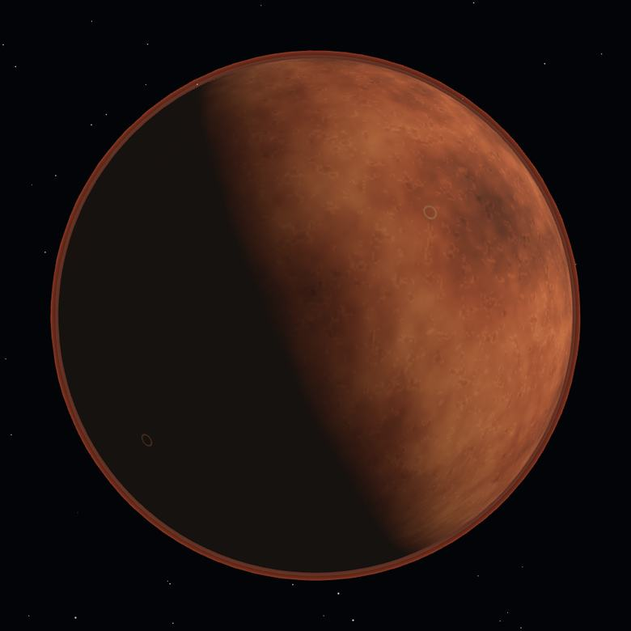

02
0:00 – 1:15 · EL PROBLEMA, CON DATOS
MILPA-360 · BIOMARS CHIAPAS
Llevar la comida es imposible. Cultivarla, sobre ese suelo, también.
7.4–10.9
toneladas
de alimento para 6 personas durante 730 soles, si todo se lanza desde la Tierra. 1.7–2.5 kg por persona y día.
0.5–1
%
de percloratos en el regolito marciano, confirmados por la sonda Phoenix en 2008. Tóxicos para la tiroides y para casi todo cultivo.
20
meses
y la tripulación no tendría hambre: tendría escorbuto. Las vitaminas se degradan mucho antes de que se acabe la despensa.

NASA — requerimientos logísticos de misión de clase conjunción · Phoenix Lander, 2008 · NASA-STD-3001 Vol. 2 Rev. E